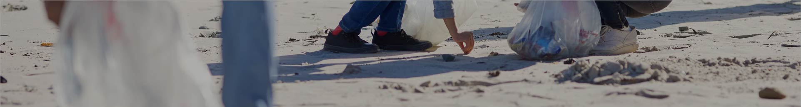

BECOME A KAITIAKI
WHAT DOES IT MEAN TO BE A
KAITIAKI (GUARDIAN)
'Kaitiaki' means guardian, which can include and individual
or a group. Kaitiaki is a guardian, keeper, preserver, conservator
or protector. To be a Kaitiaki you need to care for the enviroment
and others. Being Kaitiaki is also having respect for
the
enviroment and others.

HOW TO BE A KAITIAKI AROUND
OUR RIVERS
- Pick up your rubbish and others rubbish
- Take only what you need and not what
you want when fishing - Be careful around bird nesting areas
- Being respectful of the land and river
- Dont disturb the wildlife
- Dont leave any trace like rubbish and gear